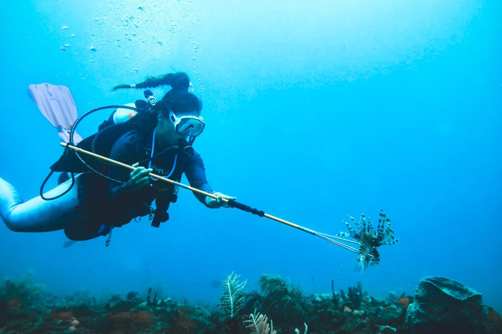

ψαροντούφεκο

Το ψαροντούφεκο είναι τεχνική υποβρύχιου κυνηγιού, όπου ο ψαροντουφεκάς καταδύεται με ελεύθερη κατάδυση και συλλαμβάνει ψάρια με ψαροτούφεκο ή καμάκι, χωρίς χρήση δολώματος.
Τι είναι το ψαροντούφεκο
Ο ψαροντουφεκάς κινείται με μάσκα, αναπνευστήρα, πέδιλα και στολή, κρατώντας ψαροτούφεκο με λάστιχα ή αεροβόλο μηχανισμό, που εκτοξεύει βέργα δεμένη σε σχοινί ή μουλινέ. Η τεχνική βασίζεται σε ελεύθερη κατάδυση (breath‑hold), προσέγγιση των ψαριών με αθόρυβη κίνηση και στοχευμένη βολή, συνήθως στο κεφάλι ή στο θώρακα του ψαριού.
Βασικές τεχνικές
Κύριες μορφές είναι το «ψάρεμα επιφάνειας», η «καρτερή» (aspetto) όπου ο ψαροντουφεκάς ξαπλώνει στον βυθό και περιμένει τα ψάρια να πλησιάσουν, και το «ψάξιμο» σε τρύπες/σπηλιές για είδη όπως ροφοί και στείρες. Στη Μεσόγειο οι επιτυχημένες βουτιές βασίζονται σε σωστή κάθοδο, χαμηλό θόρυβο, χρήση του ανάγλυφου του βυθού ως κάλυψη και καλή γνώση συμπεριφοράς των ειδών.
Ασφάλεια και δεοντολογία
Το ψαροντούφεκο απαιτεί πάντα ζευγάρι (buddy system), καλή φυσική κατάσταση, εκπαίδευση σε freediving και αυστηρή τήρηση ορίων βάθους/χρόνου για αποφυγή υποξίας και ατυχημάτων. Θεωρείται σχετικά επιλεκτική και «καθαρή» μέθοδος αλίευσης, αφού δεν έχει παραγάδια ή δίχτυα και ο κυνηγός επιλέγει κάθε ψάρι, αλλά προϋποθέτει σεβασμό σε μεγέθη, ποσότητες και προστατευόμενα είδη.